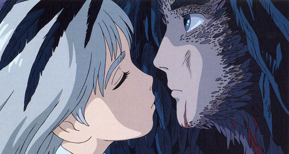
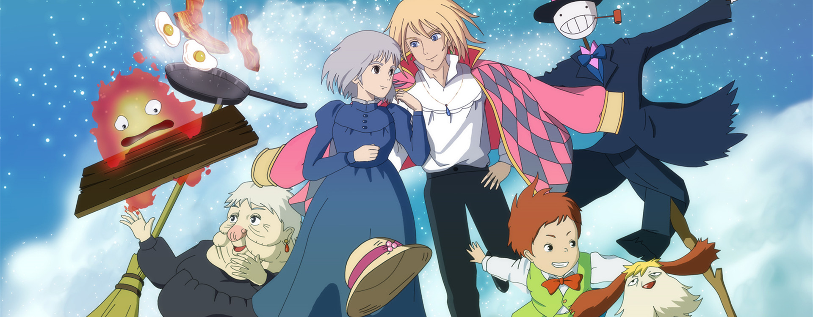

基本信息
《哈尔的移动城堡》，是宫崎骏继动画电影《千与千寻》之后，在2004年冬推出的作品。该片于2004年11月20日在日本上映。
该片改编自英国的儿童小说家黛安娜·W·琼斯的《魔法师哈威尔与火之恶魔》。该片以战争前夜为背景，描述住在小镇的三姐妹，其中的大姐苏菲是位制作
帽子的专家，但她却因此得罪了女巫，从18岁的美少女变成了90岁的老太婆。她惊恐地逃出家里，但又进入了一座移动的城堡，她和不能与人相恋但懂魔
法的哈尔，谱出了一段战地恋曲，并且和城堡里的其他人一起想办法解开身上的魔咒。
其中的城堡部分带有19世纪末钢铁工厂的特殊风格。
剧情简介
18岁的苏菲和继母以及妹妹居住在欧洲的一个小镇中，自从父亲死后，继母凡
妮就把女儿们安排到原本由父亲经营的制帽小店营生，但是苏菲的妹妹却对这并
不感兴趣，于是她很快离开了制帽店；而苏菲则坚持留了下来，因为这是父亲的最爱。
一次，苏菲在看望妹妹的路上，被两个士兵截住。这个时候一个神秘男子——哈尔
出现了，他用魔法帮助苏菲解决了问题，并送她去妹妹处。途中哈尔和苏菲受到
了荒野女巫的追捕。当晚，荒野女巫出现在了苏菲经营的制帽小店中，并对苏菲
下了诅咒，把她变成了一个90岁的老太太，而苏菲还不能对任何人透露咒语内容
。于是苏菲只能离家出走。途中她偶然遇见了神秘的稻草人芜菁，为了躲避大风
，被引进了神秘的哈尔移动城堡。在那里，苏菲结识了驱使城堡移动的魔力来源
——火焰恶魔卡西法，小男孩马鲁克，稻草人卡普以及男主人公哈尔。苏菲以清洁
妇的名义住了下来，度过了一段平静美妙的日子。苏菲逐渐活出了自己，并不知不觉地被哈尔吸引。
城堡的主人魔法师哈尔拥有神奇的力量，但他并没有像这个国家所有的魔法师一
样接受国王的号令参加战争，而是用自己的力量捍卫和平。哈尔常常在黄昏后才
精疲力尽地回到自己的城堡，并也因此越来越深陷，将变成恶魔状态。直到有一
天，哈尔对苏菲说出了自己厌恶战争的心声，苏菲决定帮助哈尔。在去王宫的路
上，苏菲遇到了荒野女巫。原来这是个陷阱，宫廷女巫莎莉曼虽然是哈尔与荒野女
巫的老师，但为了防止他们的心性被恶魔控制，收回了荒野女巫的的魔法，让她
变成了一个普通的老婆婆，而哈尔也因为放心不下苏菲来到了王宫，当莎莉曼使
出魔法要杀死卡西法收回哈尔的魔法时，苏菲冲了上来救了哈尔
战争终于全面爆发，哈尔为了保护苏菲和大家，一人独自面对敌人。内心爱着哈
尔的苏菲不忍让哈尔一人受难，决心与哈尔一同面对。于是，她驱使着移动城堡
追寻哈尔的足迹。而此时的哈尔，已经渐渐失去了意识，变成了一只只会战斗保护
苏菲的怪鸟。经过了这一连串事故后，偶然间苏菲通过戒指的指引发现了随意门
并回到了哈尔的过去，并且了解到哈尔在童年时在流星结束生命的地方遇到了流
星卡西法，而后者不愿就这样死去便与哈尔签定了契约，让火之恶魔卡西法的魔
力为他所用，但是哈尔自己的心脏也将成为这个契约的交换品，将卡西法与哈尔的生命联系在一起。
故事的最后，苏菲拯救了奄奄一息的哈尔，破除了哈尔与卡西法之间的约定并且
帮助哈尔找回了自己心脏，同时自己身上的诅咒也被解除，而稻草人卡普在苏菲
的亲吻下也摆脱了复杂的诅咒——原来他就是邻国王子，并且答应回国后就停止战
争。虽然摆脱了契约的束缚，卡西法仍然留恋和他们在一起的生活，于是在它的
驱使下，会飞的移动城堡搭载着苏菲与哈尔一行，过上了和平而幸福的生活。

电影评价
哈尔的移动城堡》或许不是宫崎骏最为出色的一部作品，却是他最为深赋隐喻之作，一场浪漫而
绚丽的爱情冒险，魔法、移动城堡、还有那优雅的哈尔与苍老的苏菲，共同构筑
了电影最为饱满的人物与剧情，即便你难懂全片诸多的暗喻，却依旧会因迷人的
梦幻而心醉，那源于本心纯真是多么美好。
影片除了获得各大影展的技术或人文类
奖项肯定之外，影评人和媒体也予以了关注，英国的电影报道杂志《Empire》将
《哈尔的移动城堡》列为史上前500大电影中的第230名；芝加哥太阳报的评论家
理察罗恩波（Richard Roeper）则肯定片中充满处处惊奇的创意。不过在日本本
土，杂志《文春》周刊，却把这部动画片列入日本金酸梅奖最差影片奖）的榜单
。这一奖项的评委认为：“该片人物塑造太平面化，不够饱满，叙事太过粗糙，配
音也不尽人意，故事缺乏感染力，充其量只是一盘豪华的视觉大餐，是宫崎骏作
品中少有的没有内涵的失败之作。”

经典台词
1、人哪有好的只是坏的程度不一样而已。
2、世界这么大，人生这么长，总会有这么一个人，让你想要温柔的对待。
3、对不起，你一直在等我，但是我却现在才来。
4、心，可是很重的。
5、“我已经逃避得太久了，现在终于等来一个我愿意誓死守护的人，it'syou…”“
好严重，身体怎么和石头一样。”“没错，心是很重的。”
6、荒野女巫和莎丽曼老师都怕得要死啊。但是因为苏菲你在这里,所以我才会在这里。
7、因为爱你，只要你一个肯定，我就足够勇敢。
8、为什么呢？我已经逃够了，这些年好不容易身边有一个非守护不可的人，就是你……
9、我已经逃避得太久了，现在终于等来一个我愿意誓死守护的人，it'syou。
10、生活就像苏菲一样，中了荒野女巫的魔法，却不能说出来。
11、我一直在躲避，但我终于找到保护的人了，那就是你。